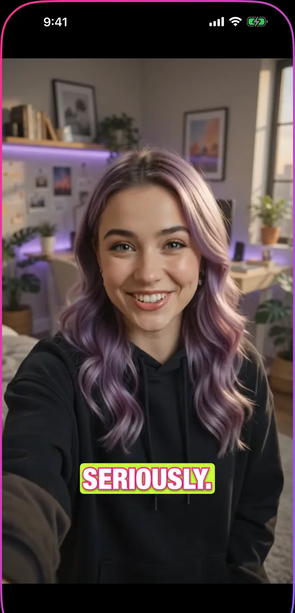

The TikTok caption font
People search this after seeing a video where the captions looked right and theirs did not. It is rarely one specific font: it is a combination, and once you can name the parts you can rebuild it with almost any heavy typeface.
Here is what the look is actually made of.

The parts of the look
- A heavy sans in bold or black. Montserrat Bold is the one most named by creators; Impact and Bebas Neue are the other two you will recognise instantly.
- White fill with a hard black outline, or a solid highlight block behind the words.
- One to three words on screen at a time, not a full sentence.
- Centred, sitting in the lower-middle third: high enough that the interface does not cover it.
- Words appearing or lighting up in time with the speech, rather than a block of text sitting there.
Why it works
The short bursts are the important part. A full sentence asks the viewer to read at their own pace while the audio runs at its pace, and the two drift apart. Two or three words at a time keeps reading and listening locked together.
The heavy weight and the outline are doing something more boring but just as necessary: making the text survive whatever is behind it, in a format where you often cannot control the background.
The mistake that gives it away
Homemade captions usually fail on placement, not on font. Dropped too low, they end up behind the username, the description and the buttons, and on a real phone half the text is simply covered.
Keep captions out of the bottom fifth of the frame and out of the right-hand strip where the action buttons live. Everything else is taste; this part is geometry.
How to do it in Charlatan
- Open your clip in Charlatan and set the pace to Word or Punch: one word, or bursts of two to three.
- In Fonts, pick from the Impact or Condensed group. Blast, Bebas and Impact are the closest to the look described above.
- In Design, turn ALL CAPS on and add the outline. If your background is bright or busy, use the marker highlight instead: it is the solid block behind the words.
- Turn on karaoke highlight so each word lights up exactly when it is said.
- Drag the caption up out of the bottom fifth of the frame, then export at 9:16.
Questions people also ask
What is the default TikTok caption font?
TikTok's own caption tool uses its house sans, and it is not available outside the app. That is part of why creators who care about the look use a separate app: it lets them keep the same type across TikTok, Reels and Shorts instead of getting a different font on each.
Can I use the same caption style on TikTok, Reels and Shorts?
Only if the captions are burned into the video file. Each platform's built-in captions are regenerated from scratch on upload, so the same clip ends up looking different on each one. Captions rendered into the frames look identical everywhere.